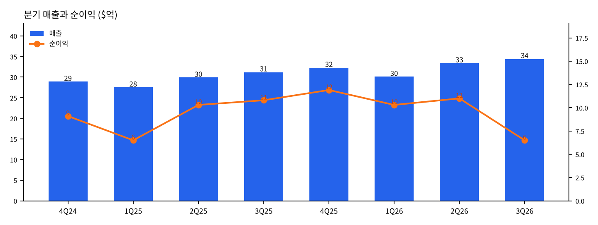
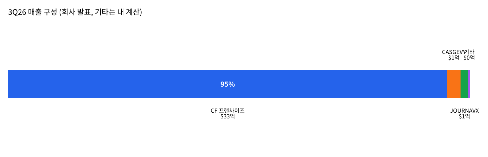
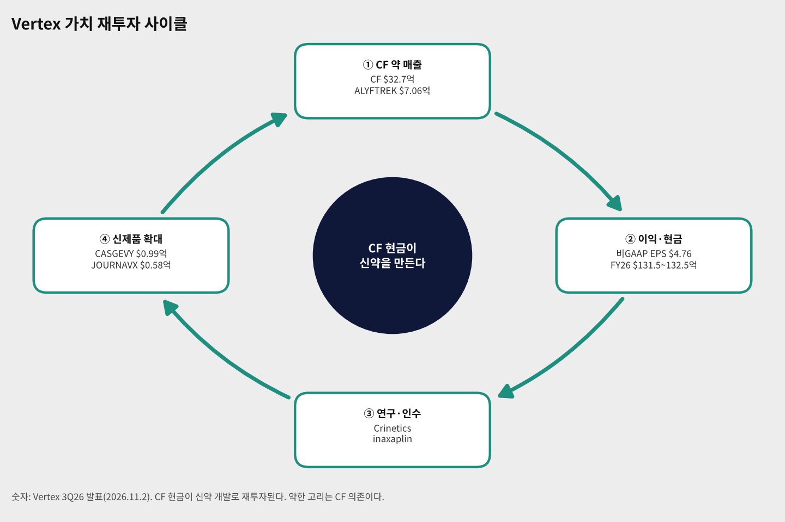

Vertex는 CF 약으로 번 현금을 신약 연구와 인수에 쏟는다. 한 분야를 깊게 파서 시장을 확보하는 방식이다.
| 항목 | 내용 |
|---|---|
| 종목 | Vertex (VRTX) · NASDAQ · 헬스케어(바이오) · 매사추세츠 보스턴 |
| 최근 분기(3Q26) | 매출 $34.4억, 비GAAP EPS $4.76 |
| 핵심 제품 | ALYFTREK, CASGEVY, JOURNAVX |
| 직원 수 | 약 6,400명(트레이딩뷰) |
| 멀티플 | PER·PEG·P/S는 08~10 항목 표 참조 |
| 직책 | 인물 | 역할·특징 |
|---|---|---|
| CEO | (확인 필요) | 회사 공개 자료 기준 확인 필요 |
| CFO | (확인 필요) | 회사 공개 자료 기준 확인 필요 |
경영 스타일: 깊게 파는 연구. 질병 하나를 파고들어 치료제로 시장을 만든다.
유전자 편집 치료제 CASGEVY가 전년 대비 약 6배, 전분기 대비 +30% 늘었다.
Crinetics 인수로 신장·내분비로 넓힌다.
다음 실적발표는 세 가지 질문에 답하는 자리다.
1. ALYFTREK 전환이 이어지나?
2. CASGEVY·JOURNAVX가 $5억 이상을 채우나?
3. Crinetics FDA 결정은?
한 줄 판정 규칙: 첫 질문(ALYFTREK 전환)이 이어지면 약한 고리(CF 의존)가 풀린다.
일정: 4Q26 실적은 2027.02.09 발표 예정이다. Crinetics 11.30 FDA 결정이 먼저 있다.
| 분기 | 매출 | 순이익 | EPS | 조정 EPS | 특이 사항 |
|---|---|---|---|---|---|
| 4Q24 | $28.9억 | $9.1억 | 3.50 | 3.98 | |
| 1Q25 | $27.5억 | $6.5억 | 2.49 | 4.06 | |
| 2Q25 | $29.9억 | $10.3억 | 3.99 | 4.52 | |
| 3Q25 | $31.2억 | $10.8억 | 4.20 | 4.80 | |
| 4Q25 | $32.3억 | $11.9억 | 4.65 | 5.03 | |
| 1Q26 | $30.1억 | $10.3억 | 4.02 | 4.47 | |
| 2Q26 | $33.4억 | $11.0억 | 4.31 | 4.73 | |
| 3Q26 | $34.4억 | $6.5억 | 2.56 | 4.76 | Crinetics 인수 비용, 비GAAP EPS 컨센 하회 |
매출은 트레이딩뷰 스캐너의 분기 총매출이라 회사가 발표한 순매출과 다를 수 있다. 3Q26 GAAP 순이익($6.54억)에는 Crinetics 인수 관련 비용이 들어 있다. 매출·순이익·EPS(GAAP 희석)는 트레이딩뷰 스캐너, 조정 EPS는 트레이딩뷰 실적 페이지의 Reported 값이다. 분기 정렬은 오래된 분기→최신이다.

흐름 요약: 최근 분기 매출은 $34.4억로 전년 동기 $31.2억 대비 +10.3%, 순이익은 $6.5억(전년 $10.8억)다. 최근 4분기 GAAP EPS는 $15.54, 조정 EPS는 $18.99다.
| 항목 | 내용 | 3Q26 매출 | 비고 |
|---|---|---|---|
| CF 프랜차이즈 | CF 약 | $32.7억 | +8% |
| CASGEVY | 유전자 편집 치료 | $0.99억 | |
| JOURNAVX | 통증 치료 | $0.58억 | |
| 그 외(내 계산) | 기타 | $0.13억 | 총 $34.4억에서 위 항목을 뺀 값 |

CF 프랜차이즈가 95%다. 신제품은 아직 작지만 빠르게 늘고 있다.
Vertex는 심각한 질병의 치료제를 개발해 환자의 삶을 바꾸는 것을 목표로 한다.
| 축 | 내용 |
|---|---|
| 핵심 | CF 치료제 |
| 성장 | CASGEVY, JOURNAVX |
| 확장 | Crinetics 인수 |

| 이동평균 | 값 | 종가 대비 | 위치 |
|---|---|---|---|
| 5일선 | $537.93 | -0.3% | 종가 아래 |
| 20일선 | $539.21 | -0.5% | 종가 아래 |
| 50일선 | $522.61 | +2.6% | 종가 위 |
| 100일선 | $516.28 | +3.9% | 종가 위 |
| 200일선 | $484.35 | +10.8% | 종가 위 |
52주 고가 $568.67(2026-11-02)·저가 $412.27(2026-05-05) 범위에서 종가 $536.45는 50일선, 100일선, 200일선을 웃돌고 5일선, 20일선은 밑돈다.
| 규칙 | 기준 | 현재 값 | 신호 |
|---|---|---|---|
| 장기 추세 필터 | 종가 vs 200일선 | $536.45 > $484.35 | 매수 |
| 중장기 교차 | 50일선 vs 200일선 | $522.61 > $484.35 | 매수 |
| 단기 교차 | 20일선 vs 50일선 | $539.21 > $522.61 | 매수 |
| 돈키언 채널 | 55일 고가 $568.67 / 저가 $484.08 | 중간값 $526.38 위 | 매수 |
| 1개월 모멘텀 | 21거래일 수익률 | +4.2% (기준 $514.65) | 매수 |
| 3개월 모멘텀 | 63거래일 수익률 | -0.7% (기준 $540.26) | 매도 |
| 6개월 모멘텀 | 126거래일 수익률 | +24.6% (기준 $430.44) | 매수 |
| 12개월 모멘텀 | 252거래일 수익률 | +23.6% (기준 $434.02) | 매수 |
| 종합 (8개 평균) | +0.75 | 강한 매수 |
해석: 매수 신호 7개(장기 추세 필터, 중장기 교차, 단기 교차, 돈키언 채널, 1개월 모멘텀, 6개월 모멘텀, 12개월 모멘텀), 매도 신호 1개(3개월 모멘텀). CTA 점수 +0.75(강한 매수). 14일 ATR $16.61 (3.1%), 52주 고가 $568.67 · 저가 $412.27.
| 가격 | 기준 | 무엇이 바뀌나 |
|---|---|---|
| $568.67 | 55일 고가 | 돌파 시 채널 상단 갱신 |
| $540.26 | 3개월 모멘텀 기준가 | 종가가 이 가격 위면 3개월 신호 매수 |
| $526.38 | 돈키언 중간값 | 55일 채널 중간값 위/아래로 신호가 바뀜 |
| $514.65 | 1개월 모멘텀 기준가 | 종가가 이 가격 위면 1개월 신호 매수 |
| $484.35 | 200일선 | 종가가 이 선 위/아래인지로 장기 추세 신호가 바뀜 |
| $484.08 | 55일 저가 | 이탈 시 채널 하단 갱신 |
| $434.02 | 12개월 모멘텀 기준가 | 종가가 이 가격 위면 12개월 신호 매수 |
| $430.44 | 6개월 모멘텀 기준가 | 종가가 이 가격 위면 6개월 신호 매수 |
가격 수준은 신호가 바뀌는 기준선일 뿐 진입·청산 가격 제안이 아니다. 20일/50일 교차는 이동평균 자체가 움직여 단일 가격으로 표시하지 않았다. 일봉·주봉은 종가 기준 직접 계산(고저 데이터 미사용)이다.
| 악재 요인 | 내용 | 강도 |
|---|---|---|
| CF 의존 | 매출의 95%가 CF | 높음 |
| EPS 컨센 하회 | 비GAAP EPS $4.76 vs 컨센 $4.92 | 중간 |
| 인수 위험 | Crinetics 인수 통합과 FDA 결정 | 중간 |
| 티커 | 회사 | PER(TTM) | PEG | P/S | EPS 성장(YoY) |
|---|---|---|---|---|---|
| VRTX | Vertex Pharmaceuticals | 28.2배 | 3.01 | 10.45배 | +9% |
| AMGN | Amgen | 25.7배 | 0.80 | 6.41배 | +33% |
| REGN | Regeneron | 20.9배 | 2.50 | 5.99배 | +8% |
| LLY | Eli Lilly | 45.4배 | 0.92 | 14.63배 | +51% |
| ABBV | AbbVie | 49.2배 | 0.15 | 7.86배 | +338% |
비교 결론: Vertex의 PER 28.2배는 Amgen·Regeneron보다 높고 Eli Lilly·AbbVie보다 낮다. PEG 3.01는 Amgen(0.80)·Regeneron(2.50)·Eli Lilly(0.92)·AbbVie(0.15) 모두보다 높다.
현금·부채는 트레이딩뷰 스캐너 값이다. 부채가 거의 없는 구조다.
| 지표 | 값 | 출처 | 해석 |
|---|---|---|---|
| 현금·단기투자 | $63억 | 트레이딩뷰 스캐너(최근 분기) | |
| 총부채 | $65억 | 트레이딩뷰 스캐너(최근 분기) | |
| 순부채(부채−현금) | $2억 | 내 계산 | 현금 대비 부채 부담 |
| 잉여현금흐름(TTM) | $32억 | 트레이딩뷰 스캐너 | |
| TTM 매출 | $130억 | 트레이딩뷰 스캐너 |
| 기준 | 매출 | P/S | 비고 |
|---|---|---|---|
| 내 계산(종가 ÷ 최근 4분기 매출 합계) | $130.2억 | 10.45배 | 시총은 정렬용 데이터에서만 사용 |
| 동종(트레이딩뷰) | – | AMGN 6.41배 · REGN 5.99배 · LLY 14.63배 · ABBV 7.86배 | 11.19 |
해석: 현금이 신약 연구와 인수에 재투자된다(내 해석).
EBITDA는 영업활동의 현금 창출력을 보는 지표이고, PEG는 PER을 EPS 성장률로 나눈 값이다. EBITDA·FCF는 트레이딩뷰 TTM 값이다.
| 지표 | 값 | 산출 |
|---|---|---|
| EBITDA(TTM) | $48억 | 트레이딩뷰 스캐너 |
| EBITDA 마진 | 36.9% | EBITDA ÷ TTM 매출(내 계산) |
| FCF 마진 | 24.6% | FCF ÷ TTM 매출(내 계산) |
| PER(GAAP TTM) | 34.5배 | $536.45 ÷ $15.54 |
| PER(조정 TTM) | 28.2배 | $536.45 ÷ $18.99 |
| 방식 | PER | EPS 성장률 | PEG | 판정 |
|---|---|---|---|---|
| 조정 EPS (TTM $18.99) | 28.2배 | +9% ($17.36 → $18.99) | 3.01 | 기준 초과 |
| GAAP EPS (TTM $15.54) | 34.5배 | +10% ($14.18 → $15.54) | 3.60 | 기준 초과 |
판정: 조정 EPS 기준 PEG 3.01 → 1.0 초과 PEG 기준은 1.0 이하 투자 적격, 0.5 이하 적극 매수다. EPS 성장률은 최근 4분기 EPS 합계를 직전 4분기 합계와 비교한 값(내 계산)이고, 일회성 항목이 있으면 조정 EPS 행을 함께 본다.

Vertex의 사이클: CF 약의 현금이 연구·인수로 가서 신제품을 만들고 신제품이 다시 매출이 된다.
| 고리 | 현재 숫자·근거 |
|---|---|
| ① CF 약 매출 | CF 프랜차이즈 $32.7억 · ALYFTREK $7.06억 |
| ② 이익·현금 | 비GAAP EPS $4.76 · FY26 매출 가이던스 $131.5~132.5억 |
| ③ 연구·인수 | Crinetics 인수 종결 · inaxaplin 중간 결과 2027초 |
| ④ 신제품 확대 | CASGEVY $0.99억 · JOURNAVX $0.58억 |
사이클의 특징: 약한 고리는 CF 의존이다(매출의 95%). "(내 해석)"은 보고서 수치가 아닌 해석이다.